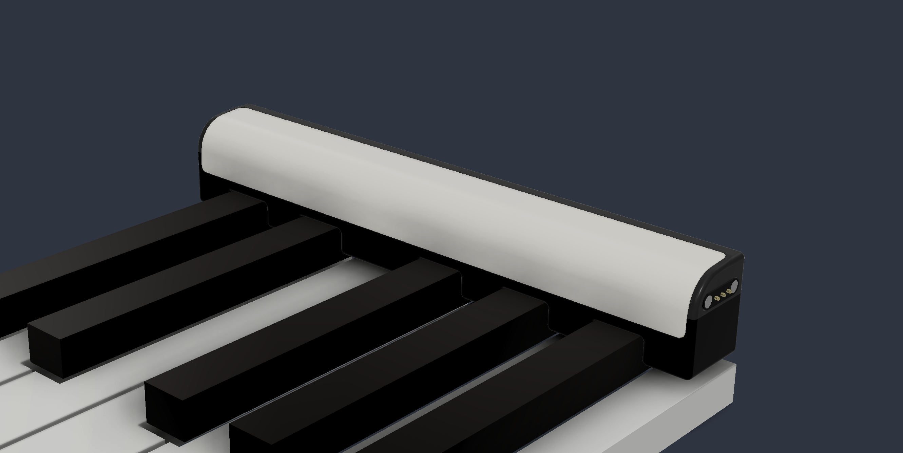
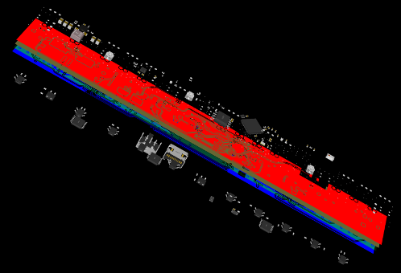

Ekimul

I founded Ekimul, a modular piano guidance system that anyone can place on any piano to turn it into a powerful tool that can listen, sense, guide, and share your playing with Ekimul-powered pianos across the world. I am currently developing Ekimul through the Cornell eLab Student Accelerator.

